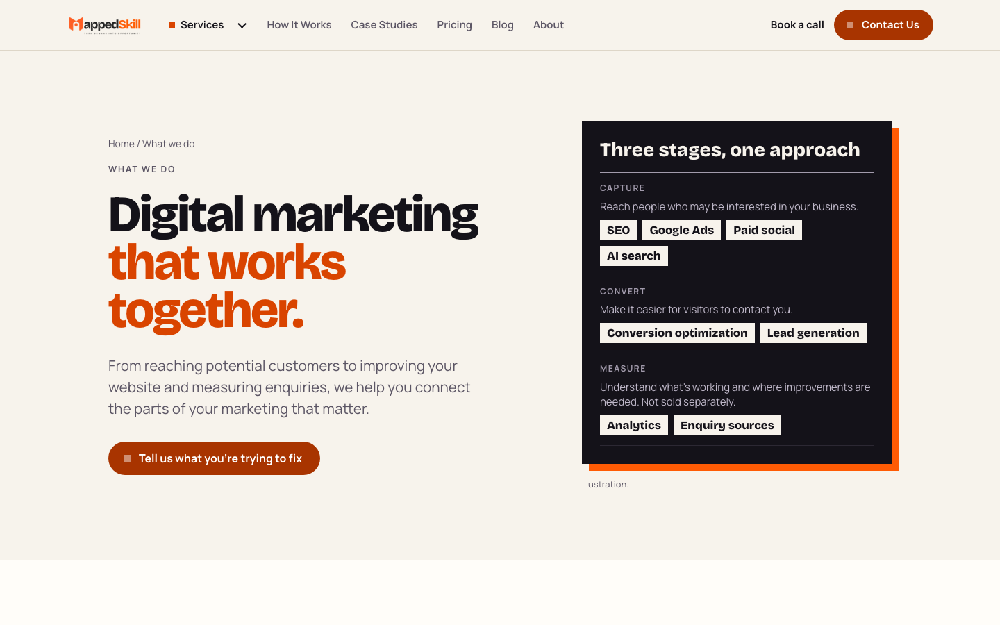
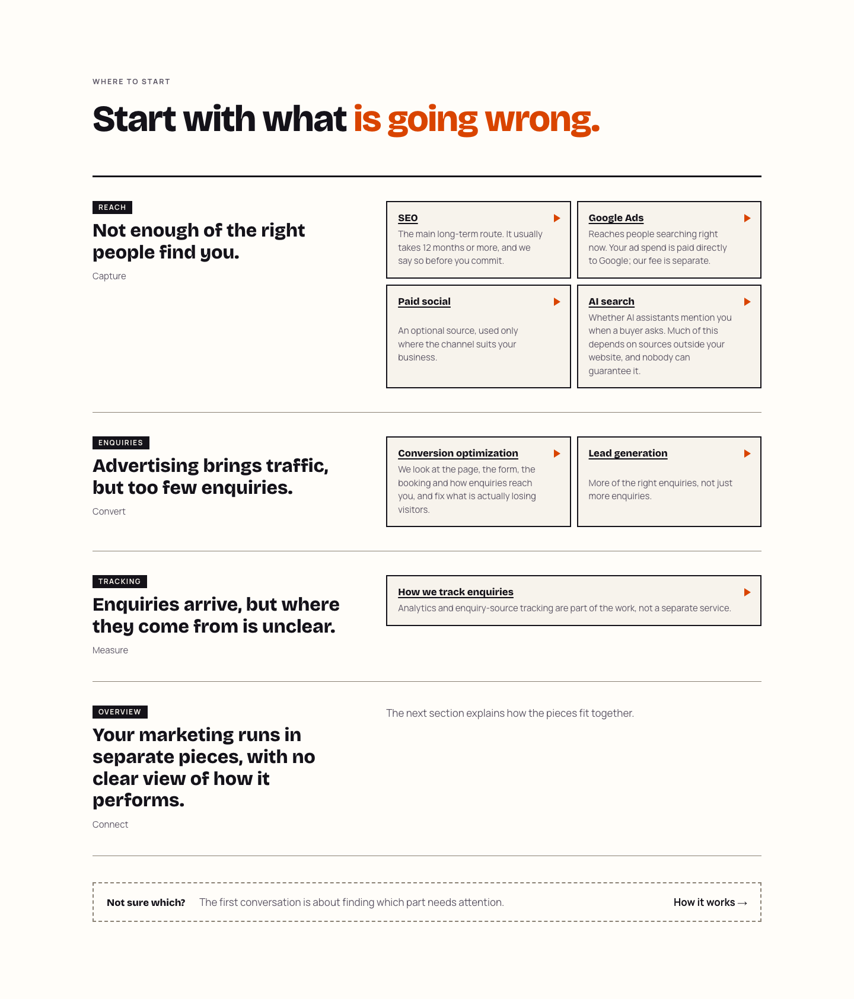
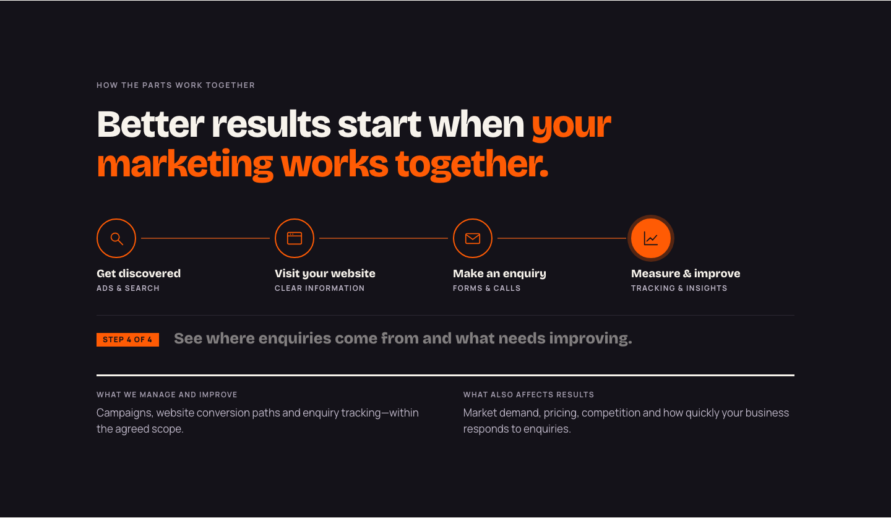

MappedSkills · /services · G0 design audit · 2026-10-18
Recommendation in one paragraph. Keep the page's best idea, which is starting from the visitor's problem, and fix the rest. The live page lists the six services three times (hero plate, router, journey), uses two competing labelling systems, and spends 1,685 px (desktop) or 2,221 px (mobile) on 14 bordered boxes. The proposed five-section direction is sound, with one change: merge the problem selector and the six service cards into one section. As two sections they would repeat the same six links again. Tell the whole page as one visual story, "the route": a single drawn path from search to enquiry to report, which the hero shows, the selector lights up where it breaks, and the journey plays once.
| # | Section | Desktop height | Mobile height | Words |
|---|---|---|---|---|
| 1 | Hero: "Digital marketing that works together." plus a dark "Three stages" plate | 734 | 1,085 | 92 |
| 2 | "Start with what is going wrong": 4 problem rows, 7 service boxes, "Not sure which?" | 1,685 | 2,221 | 208 |
| 3 | Ink: "Better results start when your marketing works together", 4-step animated journey, 2 summary notes | 835 | 1,013 | 109 |
| 4 | Paper: "Starting out, and adding later" and "Outside what we do" | 651 | 958 | 112 |
| 5 | Tangerine close: "Not sure what's holding your marketing back? Let's find out." | 696 | 504 | 42 |
| Page | 5,390 px | 7,133 px | 563 |



STEP_MS = 650 in Journey.tsx, against 1.5 s on /ai-seo, /conversion-optimization and /how-it-works (2 s on /lead-generation)./how-it-works and /lead-generation./conversion-optimization and /how-it-works)./how-it-works, not to /contact.| Element | Call | Why |
|---|---|---|
| Start from the visitor's problem | Keep | Matches Brand DNA "start from a business tension". It is the page's strongest idea. |
Links to all six service pages and to /how-it-works, /pricing, /contact | Keep | Internal links and SEO equity. They must be in the server HTML and work without JavaScript. |
Title, description, canonical, URL, page type commercial | Keep | SEO essentials and analytics. The H1 is a separate decision (SV-D01). |
| "Measurement is part of the work, not sold separately" | Keep | Accurate scope, and it explains why there are six cards and three stages. |
| "Outside what we do" list | Simplify | Approved scope (SERVICE_ARCHITECTURE.md). Becomes one compact strip. |
| "Starting out, and adding later" | Simplify | Merge into the same strip, one line each. |
| Animated journey | Simplify | Three equal stages, 1.5 s steps, plays once. |
| Tangerine close | Simplify | Keep the full-bleed moment; add "Book a call" and "What happens next". |
| Hero "Three stages" plate with fake chips | Remove | False affordance and repetition. Replaced by the route drawing. |
| "Overview / Connect" row | Remove | Dead end and a fourth stage. |
| Double tags (Reach + Capture …) | Remove | Use Capture / Convert / Measure only, as the header menu already does. |
| "What we manage" / "What also affects results" notes | Remove | The second note is fair but is covered on /how-it-works and /faq. Owner may keep it as one line in the strip. |
| Proposed | Verdict | Recommendation |
|---|---|---|
| 1. Hero "Get found. Get enquiries. Know what works." | Good pattern; two words need care | It follows the Brand DNA "System" headline pattern. "Know what works" overstates what tracking can show (the released /how-it-works has a whole section on what the numbers cannot show). Use "See what's working." "Get enquiries" is acceptable as a description of the work only if no nearby line implies a volume or guarantee. |
| 2. Interactive problem selector | Yes, merged with 4 | As a separate section it would show the same six links as section 4. Merge them: three problem buttons above the six cards; choosing one highlights the matching cards and the break point on the route. Nothing is hidden, so all six links stay visible, crawlable and usable without JavaScript. |
| 3. Capture → Convert → Measure journey | Yes | Three equal stages (Brand DNA p.6: no stage visually larger or "better"). Each stage names its services. Played as one example enquiry's path. |
| 4. Six service cards | Yes, inside section 2 | Six cards on a ruled, asymmetric layout grouped by stage (4 · 2), not 14 equal boxes. One plain line per card about what it does for you. |
| 5. Contact CTA | Yes | Primary "Tell us what's not working" → /contact; secondary "Book a call" → /schedule-call; "What happens next" from confirmed facts only. |
| (not proposed) scope and exclusions | Keep, condensed | A one-strip section between journey and close. Cutting it entirely removes useful, honest scope. Owner choice (SV-D04). |
/how-it-works. Choosing a problem highlights its cards and its point on a mini route. A fourth option, "Not sure", points to the contact CTA.One drawn path, used three times, so the page explains itself without paragraphs. It is the Brand DNA's own idea ("show the path from demand to action") and visually distinct from the step cards on /how-it-works.
| Risk | Detail | Mitigation |
|---|---|---|
| Guarantee read into "Get enquiries" | DEC-057: no guarantee of lead quality or conversion. | No numbers, "more", or speed claims near the H1; lede frames it as what we help with. |
| "Qualified" or quality claims | Live Lead generation card says "More of the right enquiries, not just more enquiries", which implies quality that DEC-057 does not allow us to claim. | Rewrite in line with DEC-057, for example "Ad campaigns that send enquiries straight to your form, CRM or WhatsApp." (SV-D08) |
| Measurement certainty | "Know what works" and "See where enquiries come from" read as universal. | "See what's working" and "where tracking allows" (DEC-053 OD-04 wording). |
| Monthly review call | Not a standard commitment (DEC-057, HW-D01). | Mention the monthly report only, or the exact HW-D01 sentence. |
| Example business in the journey | Could read as a client result. | Fictional, visibly labelled, no figures (as DEC-054 item 5). |
| Service list becoming the brand | Brand DNA p.13: "Never let the service list become the brand." | Problems and the route lead; cards support. |
| Scope creep | Standalone web development and organic social are excluded (DEC-005, DEC-032). | Keep the exclusions strip; no new cards. |
| H1 change | The H1 currently matches the title ("Digital marketing that works together"). | Title and description unchanged; "digital marketing" kept in the lede. Owner decision SV-D01. |
| Interaction and analytics | New buttons add no events; no tracking is requested. | No dataLayer pushes or data-* hooks; GTM Preview check stays with E6. |
| ID | Decision | Recommended |
|---|---|---|
| SV-D01 | H1: keep "Digital marketing that works together." or use "Get found. Get enquiries. See what's working." | New H1; title and description unchanged. |
| SV-D02 | Selector and six cards: one merged section, or two sections as proposed | Merged. |
| SV-D03 | Journey: three stages (Capture, Convert, Measure) or keep four steps | Three. |
| SV-D04 | Scope and exclusions: compact strip, or remove from this page | Compact strip. |
| SV-D05 | Card copy: one plain benefit line each, caveats left to the service pages (SEO's 12-month horizon kept as a short note) | Yes. |
| SV-D06 | Add "Book a call" as the secondary CTA in the hero and close | Yes, matching /how-it-works. |
| SV-D07 | Micro-interaction timing: 150 ms (this brief) or 200 ms (approved for /conversion-optimization, DEC-056) | 150 ms on this page; 1.5 s journey steps. |
| SV-D08 | Lead generation card wording in line with DEC-057 | Yes. |